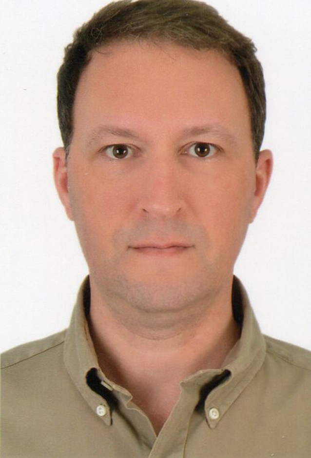

Curriculum Vitae
Eric W Brockwell
Geographer | Diplomat
Summary

Currently taking a sabbatical for intentional thinking about what comes next. More recently, helping GM transition from a culture of thinking and delivering like an automotive
manufacturer to a culture of being a Software Enabled Services Platform provider, I led software
innovation teams working on GM Mobile Apps used by millions. I modeled professional behavior while
developing/promoting a psychologically safe space and I focused on helping others through change and
facilitating periods of transition. Both professionally and personally, I work to reduce negative
impacts of anthropogenic and technical progress on the environment, society, and individuals; and I
always work to transfer valuable skills/experience to internationals/locals, newer workers, and
students.
Previously an AI/ML Software Development Manager, Geomatics Engineer, and GIS Administrator/DBA/Developer
with experience in most aspects of geospatial and IT as they relate to the environmental protection and
Oil & Gas E&P industries. Equally capable in planning, executing and completing projects whether working
solo, as a team member, or as the project manager/team lead. Experienced at using both proven and
creative methods for developing solutions to data and database problems, designing web applications and
desktop software extensions/customizations and leading both small and large teams across disparate
locations to do the same. Communicated regularly with customers, end users, data stewards, and mid-level
managers for the purposes of assessing needs, defining requirements, coding applications, and providing
user support.
Education
- Master of Arts, Russian & East European Studies - Florida State University (1994-1996)
- Bachelor of Science, Geosciences/Geography - University of Tennessee Martin (1988-1993)
Select Employers
- 2016 – 2023 General Motors, US
- 2014 – 2015 Chevron Thailand Exploration and Production, Thailand
- 2012 – 2014 WS Atkins & Partners Overseas, Qatar
- 2011 – 2012 Ministry of Water Resources, Iraq
- 2010 – 2011 URS Corporation [now AECOM], US
- 2009 – 2009 Agip KCO, Kazakhstan
- 2005 – 2009 URS Corporation [now AECOM], US
- 2003 – 2005 Agip KCO, Kazakhstan
- 1996 – 2003 Florida Department of Environmental Protection, US
- 1995 – 1996 Jefferson County Florida, US
Skills
- GIS Desktop Products: ARC/INFO > ArcGIS Desktop [1996-2015], QGIS [2016-2017]
- Spatial Databases: Oracle Spatial [2002-2005, 2016], PostGres [2010], SQL Server [2007, 2012-2014]
- GIS Server Products: ArcSDE [1999-2014], ArcIMS [2005-2009], ArcGIS Server [2008-2014]
- Programming Languages: Python [2007-2017], JavaScript [2001-2014], ESRI JSAPI [2007-2009]
- Frameworks/Libraries: ESRI JavaScript API [2008-2014], Dojo [2008-2010]
- Databases: Oracle [1997-2017], SQL Server [2012-2014], PostgreSQL [2009-2010]
- Delivery Platforms: MS VS > MS TFS > MS ADO [2014-2023]
- Methodologies: Scrum Agile [2016-2022], Scaled Agile [2022-2023], AI Prompt Engineering [2024]
Intellectual Property
- “Awareness System for Experiencing an Environment Through Music” – GM Patent Ref. No. P052232-US-NP
– Allowed November 17, 2023
- “User Sensory Control” – GM Patent Ref. No. P105138-PRI-NP-US01 – Submitted to USPTO: August 08,
2023
- 2 GM Defensive Publications co-published anonymously [2023]
- 1 GM Trade Secret co-awarded [2023]
Presentations
- "ArcGIS Server 9.3: The JavaScript API", Co-presented at SHRUG GIS Workshop, November 19, 2008
- “GIS Interface into Oracle” Presented at DEP GIS Workshop, October 14, 1998
- "Virtual Reality in Early Soviet Cinema" Presented at FSU Conference on Film and Literature, January
31, 1997
Awards & Certifications
- SAFe 5.0 Agilist (2022-2023)
- GPDIT Award (2017)
- T-BOSIET (2015-2018)
- GISP (2008-2013)
- URS Associate Project Manager (2008)
- Division of Water Resource Management Appreciation Award, July 2000
- Letter of Commendation from Director of DEP's Southeast District to the Secretary, January 1998
- WASTE Appreciation Award, June 1997
- WASTE Appreciation Award, March 1997
Activities & Hobbies
- Co-wrote and co-directed musical drama, "Blood of the Lamb", Easter 1998
- FSU Summer Russian Program, St. Petersburg, Russia, Summer 1995
- Student Government Association, University of Tennessee at Martin 1989-92
- Executive Assistant to the Vice President 1990-91
- Facilities Planning Committee, University of Tennessee at Martin 1990-92
- Opera Theater 1991